ishtyle
AI-powered fashion ecosystem seamlessly digitizing physical closets to deliver personalized outfit recommendations
Introduction
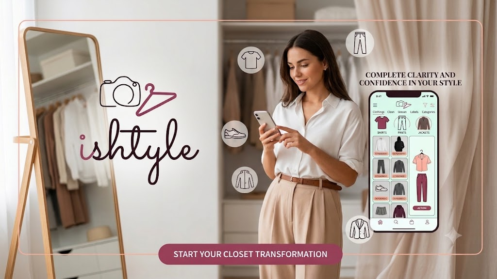
Tagline: Your wardrobe. Your stylist. Your confidence.
Role: Lead UX/UI Designer & Android Engineer
Focus: Minimalist closet management and AI style matchmaking.
2. Overview
Role: Product Design & Android Dev
Duration: 4 Weeks
Tools: Figma, Android Studio, Kotlin
3. The Problem
Users face significant morning decision fatigue. Despite full closets, they feel they "have nothing to wear," struggle with impulse shopping/duplicate purchases, lack general styling confidence, have difficulty identifying cuts matching their body shape, and contribute to environmental fashion waste.
4. Project Goals
- Reduce Friction: Create a swift 4-step digitization workflow to upload clothes and remove backgrounds instantly.
- Decentralize Choice: Generate personalized outfit options matching weather, calendar events, and mood in under 60 seconds.
- Encourage Mindful Habits: Auto-detect wardrobe gaps (e.g. "14 tops but only 2 formal bottoms") to limit impulse buying.
5. Competitive Research
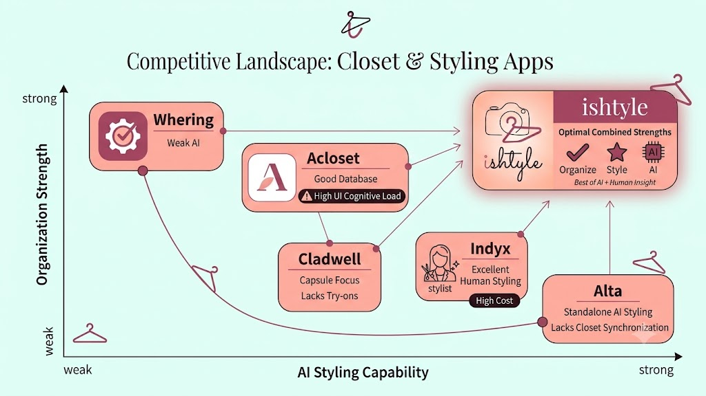
I analyzed leading closet apps: Whering (strong organization, weak AI), Acloset (good database, high UI cognitive load), Cladwell (capsule focus, lacks try-ons), Indyx (excellent human styling, high cost), and Alta (standalone AI styling, lacks closet synchronization). ishtyle combines the strengths of all these approaches.
6. Key Insights
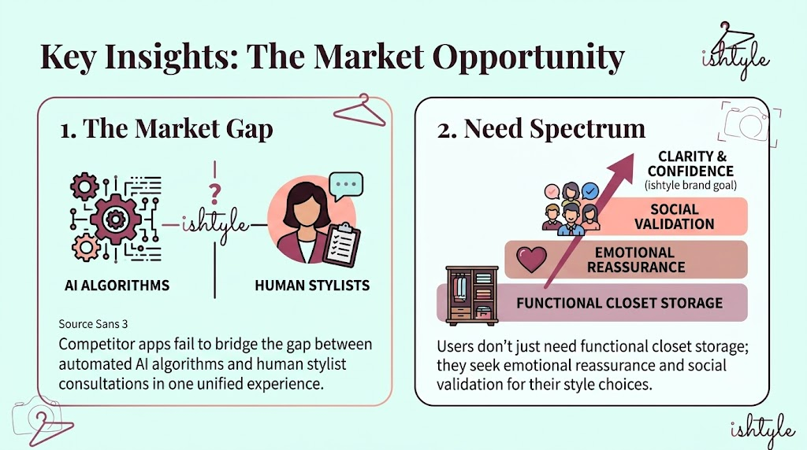
- The Market Gap: Competitor apps fail to bridge the gap between automated AI algorithms and human stylist consultations in one unified experience.
- Need Spectrum: Users don't just need functional closet storage; they seek emotional reassurance and social validation for their style choices.
7. Persona
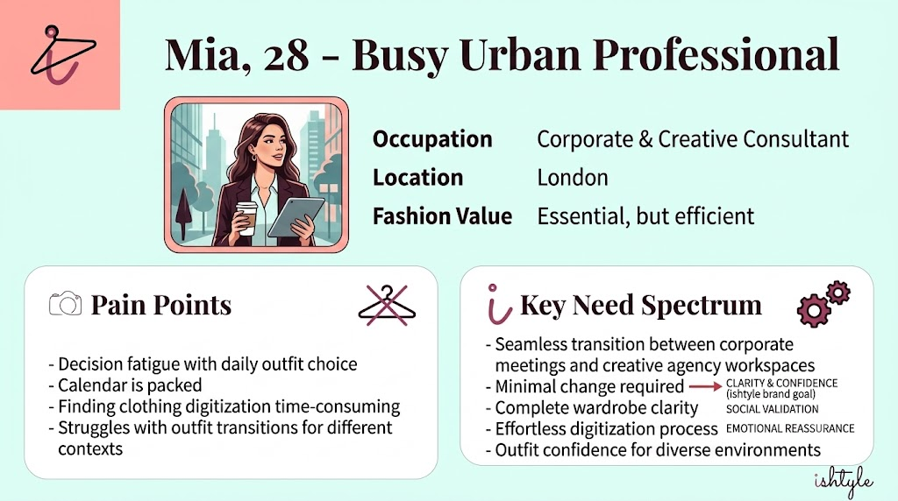
Mia, 28 - Busy Urban Professional: Mia values fashion but suffers from decision fatigue. Her calendar is packed, and she needs to transition seamlessly between corporate meetings and creative agency workspaces without changing outfits.
8. User Journey Map
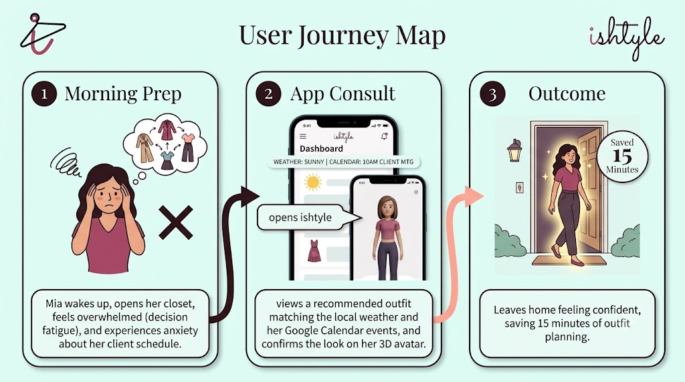
- Morning Prep: Mia wakes up, opens her closet, feels overwhelmed (decision fatigue), and experiences anxiety about her client schedule.
- App Consult: Mia opens ishtyle, views a recommended outfit matching the local weather and her Google Calendar events, and confirms the look on her 3D avatar.
- Outcome: Mia leaves home feeling confident, saving 15 minutes of outfit planning.
9. How Might We (HMW)
- How might we make wardrobe digitization feel fast, automated, and engaging?
- How might we align styling recommendations with daily mood changes and event requirements?
- How might we visually spotlight wardrobe imbalances to encourage conscious consumption?
10. Information Architecture
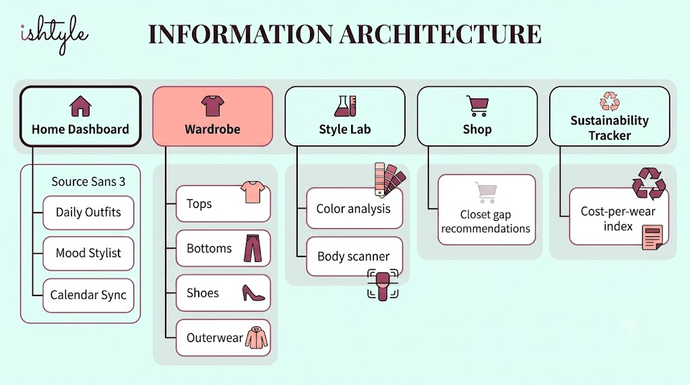
The app structure features five primary tabs:
Home Dashboard (Daily Outfits, Mood Stylist, Calendar Sync),
Wardrobe (Tops, Bottoms, Shoes, Outerwear),
Style Lab (Color analysis, Body scanner),
Shop (Closet gap recommendations), and
Sustainability Tracker (Cost-per-wear index).
ishtyle (Root)
│
├── 📁 app/src/main
│ ├── 📁 java/com/example/ishtyle/
│ │ ├── MainActivity.kt # Entry navigation coordinating views
│ │ └── 📁 ui/
│ │ ├── BrandLogos.kt # Vector image rendering modules
│ │ └── 📁 theme/
│ │ ├── Color.kt # Brand color palette variables
│ │ ├── Theme.kt # Light/Dark scheme configurations
│ │ └── Type.kt # Typography definition for custom fonts
│ │
│ └── 📁 res/
│ └── 📁 font/ # Variable TTF files (Playfair & Source Sans)
│
└── 📁 gradle/ # Version catalogs
For modularity, we represented clothing properties using a lightweight Kotlin data model to hold digitizing attributes:
data class WardrobeItem(
val id: String,
val name: String,
val category: String,
val itemType: String, // "shirt", "pants", "shoes", "jacket"
val color: String = "Neutral",
val season: String = "All",
val occasion: String = "Casual",
val isFavorite: Boolean = false,
val isNew: Boolean = false
)
11. User Flow (First-Time Onboarding)
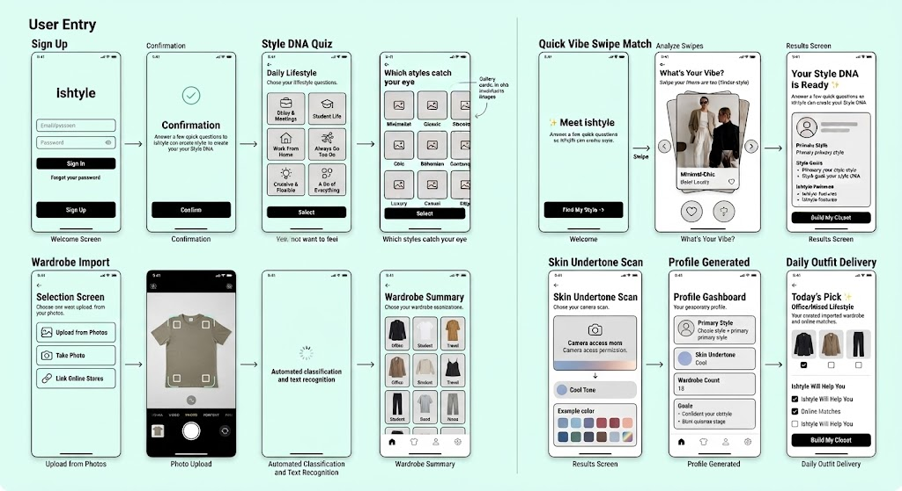
Sign Up ➔ Style DNA Quiz ➔ Quick Vibe Swipe Match ➔ Skin Undertone Scan ➔ Wardrobe Import ➔ Profile Generated ➔ Daily Outfit Delivery.
12. Wireframes
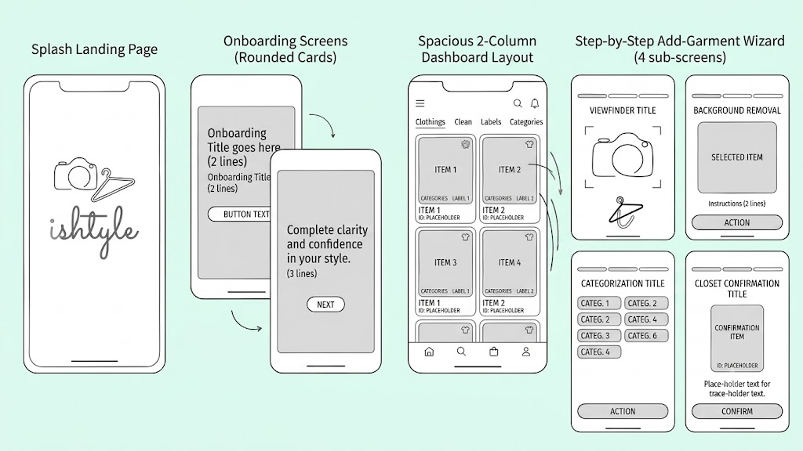
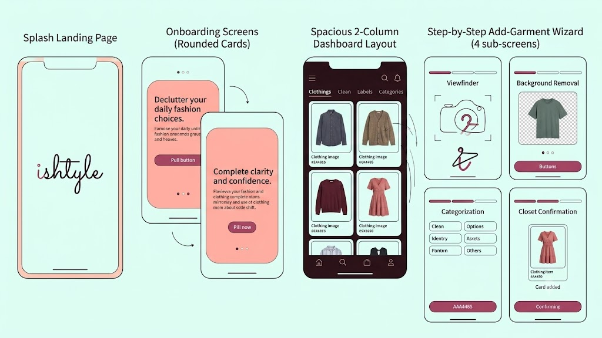
Designed a clean mobile wireframe hierarchy: a splash landing page featuring the cursive wordmark, onboarding screens utilizing rounded cards, a spacious 2-column dashboard layout, and a step-by-step add-garment wizard (Viewfinder, Background Removal, Categorization, and Closet Confirmation).
13. UI Design System
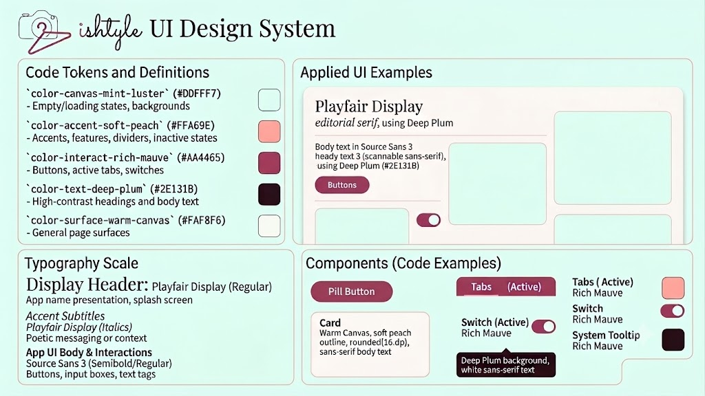
Defined brand styles in code:
Mint Luster (#DDFFF7) for backgrounds/canvas,
Soft Peach (#FFA69E) for borders/dividers,
Rich Mauve (#AA4465) for buttons/CTAs,
Deep Plum (#2E131B) for typography structure, and
Warm Canvas (#FAF8F6) for page surfaces.
Fonts pair editorial Playfair Display with readable Source Sans 3.
14. Final UI Screen Showcase
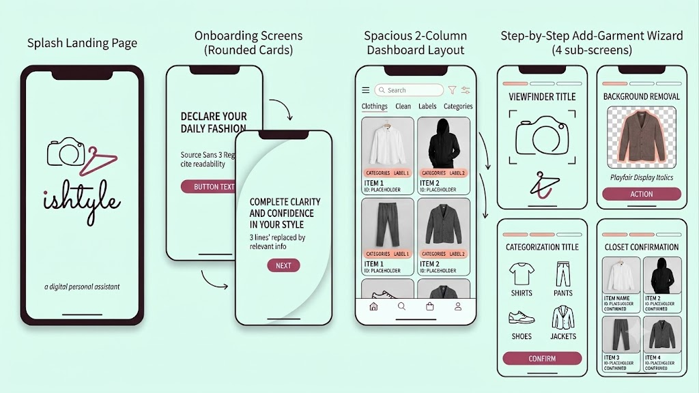
Refined high-fidelity components to feature flat cards with micro-thin borders instead of heavy shadows, clean icons representing shirts/pants/shoes/jackets, and spacious, decluttered grids where garments are the heroes.
To align with our minimalism pillar, I implemented the custom vector outline draw methods using Jetpack Compose Canvas path structures:
@Composable
fun ShirtOutlineDrawing(color: Color) {
Canvas(modifier = Modifier.size(64.dp)) {
val w = size.width
val h = size.height
val stroke = 2.5.dp.toPx()
val path = Path().apply {
moveTo(w * 0.4f, h * 0.15f)
quadraticTo(w * 0.5f, h * 0.22f, w * 0.6f, h * 0.15f)
lineTo(w * 0.8f, h * 0.25f)
lineTo(w * 0.9f, h * 0.4f)
lineTo(w * 0.8f, h * 0.45f)
lineTo(w * 0.75f, h * 0.38f)
lineTo(w * 0.75f, h * 0.85f)
lineTo(w * 0.25f, h * 0.85f)
lineTo(w * 0.25f, h * 0.38f)
lineTo(w * 0.2f, h * 0.45f)
lineTo(w * 0.1f, h * 0.4f)
lineTo(w * 0.2f, h * 0.25f)
close()
}
drawPath(path, color = color, style = Stroke(width = stroke))
}
}
For the background removal step of the digitization wizard, I designed a custom Composable that uses infinite animations to render a scanning laser overlay and a mathematically calculated transparency grid:
@Composable
fun RemoveBackgroundStep(
garmentType: String,
smoothEdges: Float,
refinement: Float,
onSmoothChange: (Float) -> Unit,
onRefinementChange: (Float) -> Unit,
onConfirm: () -> Unit
) {
// Infinite transition for real-time laser/scanner effect
val infiniteTransition = rememberInfiniteTransition(label = "scan_laser")
val scanY by infiniteTransition.animateFloat(
initialValue = 0.05f,
targetValue = 0.95f,
animationSpec = infiniteRepeatable(
animation = tween(durationMillis = 2000, easing = LinearEasing),
repeatMode = RepeatMode.Reverse
),
label = "laser_pos"
)
Column(modifier = Modifier.fillMaxSize().padding(24.dp)) {
Box(modifier = Modifier.fillMaxWidth().weight(1f)) {
// Checkerboard transparency canvas
Canvas(modifier = Modifier.fillMaxSize()) {
val cols = 20
val rows = 30
val boxW = size.width / cols
val boxH = size.height / rows
for (r in 0 until rows) {
for (c in 0 until cols) {
if ((r + c) % 2 == 0) {
drawRect(
color = Color(0xFFF3F1EF),
topLeft = Offset(c * boxW, r * boxH),
size = Size(boxW, boxH)
)
}
}
}
}
// Render laser scanner line
Canvas(modifier = Modifier.fillMaxSize()) {
val lineY = size.height * scanY
drawLine(
color = RichMauve.copy(alpha = 0.8f),
start = Offset(12.dp.toPx(), lineY),
end = Offset(size.width - 12.dp.toPx(), lineY),
strokeWidth = 3.dp.toPx(),
cap = StrokeCap.Round
)
}
}
}
}
15. Interactive Prototype
Designed a fully functional interactive prototype flow in Jetpack Compose: Splash delay transition, swipeable onboarding pages, active grid categories, and a multi-step camera digitization wizard complete with a shutter flash animation and laser scanner overlay.
16. Usability Testing
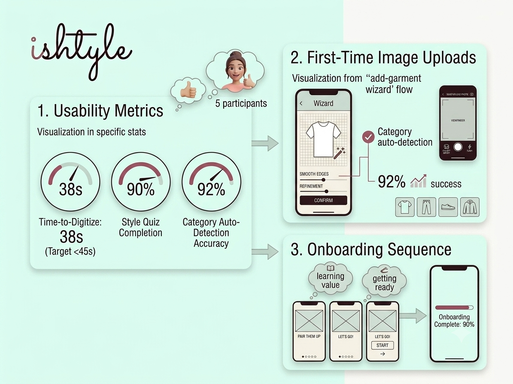
Tested with 5 participants:
Time-to-Digitize averaged 38 seconds (exceeding target of <45s),
Style Quiz Completion sat at 90%, and
Category auto-detection accuracy achieved 92% success during initial image uploads.
17. Reflection
Combining design systems with functional code structures early avoids layout regression. High-fashion aesthetics (like editorial typography and a custom warm palette) elevate the utility from a simple closet inventory list to a desirable, daily lifestyle companion.